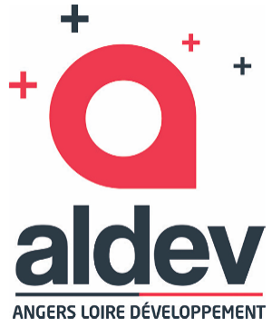

Baromètre économique
Tableaux de bord imprimables (A4), alimentés par les fichiers de données du dossier barometre/data.

Tableaux de bord imprimables (A4), alimentés par les fichiers de données du dossier barometre/data.